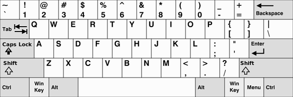
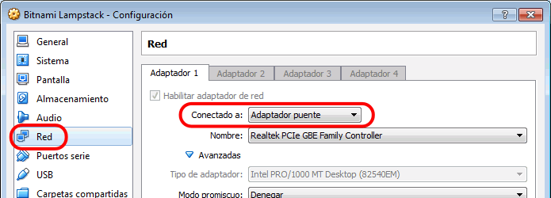

Para averiguar la versión de Ubuntu de la máquina, escribir el comando:
lsb_releases -aPara apagar una máquina, escribir el comando:
sudo shutdown -h nowPara averiguar la IP de la máquina, escribir el comando:
ifconfigTambién se puede escribir un comando más moderno:
ip addrCuando la salida por pantalla de un comando es muy larga, no se puede ver completa. Para ello, se puede utilizar el visor less (o more):
comando | lessEn less, algunos comandos son: q (salir), f (forward = avanzar una página), b (backwards = retroceder una página), /texto (buscar texto), n (buscar siguiente), N (buscar anterior).
Las máquinas virtuales de Bitnami tienen configurado el teclado de Estados Unidos. Se puede cambiar la configuración del teclado a otros idiomas mediante la orden:
sudo dpkg-reconfigure keyboard-configurationEn un teclado de España, las opciones a seleccionar suelen ser las siguientes:
Esta es la disposición de los caracteres en un teclado de Estados Unidos de América.

| Posición en el teclado inglés | Resultado en el teclado español |
|---|---|
| Ñ | : |
| Ç | | |
| - | / |
| ' | - |
| ( | * |
| ¿ | + |
| · | # |
dpkg -l | grep aplicacionsudo apt-get install aplicacionPor ejemplo, el servicio de SSH (sshd):
ps aux | grep sshdPor ejemplo, el servicio de SSH:
sudo start sshAntes de iniciar los servicios, es necesarios configurarlos correctamente.
Para ver el espacio de disco ocupado y libre:
du -hs /pathdu -h --max-depth=n /pathPara buscar un archivo:
find /path -name archivoPara mostrar sólo las líneas que contienen una palabra:
find /path -name archivo | grep palabraPara mostrar sólo las líneas que no contienen una palabra:
find /path -name archivo | grep -v palabraReferencia: http://tldp.org/LDP/intro-linux/html/sect_06_02.html
Para editar un archivo con vi:
vi nombre_de_archivoEl editor vi abre el archivo en modo Comando.
| Comando | Función |
|---|---|
| i | Pasar a modo Edición |
| a | Pasar a modo Edición (avanzando una posición el curso) |
| o | Añadir una línea en blanco y pasar a modo Edición |
| Esc | Volver a modo Comando |
| v / V | Señalar el principio del fragmento a copiar (seleccionando por caracteres / líneas) |
| d / y | Señalar el final del framento a cortar / copiar |
| p | Señalar el lugar donse pega el fragmento cortado o copiado |
| Comando | Función |
|---|---|
| :q | Salir |
| :q! | Forzar salir (sin guardar) |
| :w | Guardar |
| /xyz | Buscar xyz |
| n dd | Borrar n líneas |
Directorio de Apache
cd /opt/bitnami/apache2/Reiniciar Apache
sudo /opt/bitnami/ctlscript.sh restart apachecd /opt/bitnami/apps/owncloudPara que la máquina virtual reciba una IP en la misma subred que el ordenador anfitrión, por ejemplo IP 192.168.XXX.YYY, en VirtualBox la configuración del adaptador debe ser Conectado a "Adaptador puente".

Que yo sepa, no se puede copiar y pegar entre el ordenador anfitirión y una máquina virtual Ubuntu de Bitnami en modo terminal.
Si se necesita copiar y pegar, la solución sería conectar mediante SSH con PuTTY (como en el ejercicio Bitnami (2) 2. Para pegar en el terminal de PuTTY, hay que teclear Shift + Insert.
Si la máquina virtual tiene un entorno gráfico, entonces sí que se puede copiar y pegar, instalando primero las VortualBox Guest Additions y activando el menú de VirtualBox Dispositivos > Arrastrar y soltar.
Documentación de Bitnami: Instalar VirtualBox Guest Additions
Para tener disponible una aplicación web o un sitio web en un puerto determinado hay que editar los archivos siguientes:
# apache/conf/httpd.conf
Listen PUERTO
# apache/conf/extra/httpd-vhosts.conf
# Nota: Donde pone localhost podría ser una IP o un dominio o subdominio
<VirtualHost localhost:PUERTO>
ServerAdmin EMAIL
DocumentRoot "RUTA A PAGINAS"
ServerName localhost:PUERTO
ErrorLog "logs/ERROR.LOG"
CustomLog "logs/ACCESS.LOG" combined
</VirtualHost>
Un proxy inverso permite enviar las peticiones a un puerto a otras direcciones (de la misma máquina o de otras). En el archivo de configuración hay que cargar los módulos necesarios.
En el ejemplo siguiente, la máquina tiene dos hosts virtuales en dos puertos y el proxy envia las peticiones http://localhost/ruta a un host u otro dependiendo de la ruta.
# apache/conf/httpd.conf
# Descomentar los módulos proxy necesarios
LoadModule proxy_module modules/mod_proxy.so
#LoadModule proxy_ajp_module modules/mod_proxy_ajp.so
#LoadModule proxy_balancer_module modules/mod_proxy_balancer.so
#LoadModule proxy_connect_module modules/mod_proxy_connect.so
#LoadModule proxy_express_module modules/mod_proxy_express.so
#LoadModule proxy_fcgi_module modules/mod_proxy_fcgi.so
#LoadModule proxy_ftp_module modules/mod_proxy_ftp.so
#LoadModule proxy_html_module modules/mod_proxy_html.so
LoadModule proxy_http_module modules/mod_proxy_http.so
#LoadModule proxy_http2_module modules/mod_proxy_http2.so
#LoadModule proxy_scgi_module modules/mod_proxy_scgi.so
#LoadModule proxy_wstunnel_module modules/mod_proxy_wstunnel.so
# ...
# apache/conf/httpd.conf
# Virtual hosts
Include conf/extra/httpd-vhosts.conf
NameVirtualHost *:80
<VirtualHost *:80>
# Las directivas comentadas es porque yo no las he necesitado
# pero he leído que pueden ser necesarias en algunos casos
# ProxyPreserveHost On
# ProxyRequests Off
# ProxyVia Off
# ServerName localhost
# <Proxy *>
# Require all granted
# </Proxy>
# Servers to proxy the connection, or;
# List of application servers:
# Usage:
# ProxyPass / http://[IP Addr.]:[port]/
# ProxyPassReverse / http://[IP Addr.]:[port]/
# NOTA: Donde pone localhost podría ser una IP o un dominio o subdominio
# NOTA: Donde pone /XXX1 podría ser sólo /
ProxyPass /XXX1 http://localhost:PUERTO1
ProxyPassReverse /XXX1 http://localhost:PUERTO1
ProxyPass /XXX2 http://localhost:PUERTO2
ProxyPassReverse /XXX2 http://localhost:PUERTO2
</VirtualHost>